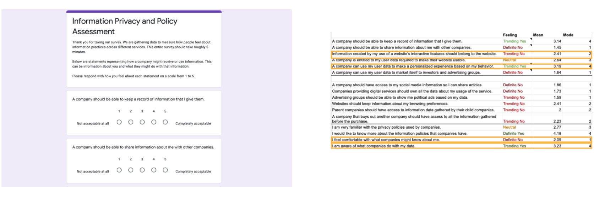

Content Design | Visual Identity | UI/UX
DATA CTRL is a collaborative project for the NYC Media Lab x Consumer Reports Privacy Policy Prototyping Challenge. Our team prototyped an online educational tool and chatbot to provide users information on the consequences of their data agreement and to have a single location to control their data outcomes across multiple websites. Over the course of a short dialogue, users could ask about the different components of a privacy policy and specify exactly what settings they want. The focus of the project was on user research, content design, and art direction.
THE CHALLENGE:
To create and present a final pitch presentation on how can we make privacy policies and terms of service more useful to average consumers.
PROCESS:
// PROJECT ROADMAP
The project was a remote collaboration amongst a group of five students and NYC Media Lab and Consumer Reports mentors. To meet the project deadline, we created a project roadmap in order to manage tasks efficiently within the team. We divided the project into 3 phases: Phase 1 comprised of discovery, research, and wireframing. Phase 2 of the project consisted of low-fidelity prototyping,research, and consultation with the Consumer Reports Digital Team. Lastly, in Phase 3, our focus was to work on the high-fidelity prototype idea to pitch for the final presentation.
// USER DATA ANALYSIS
Privacy policies are long, detailed, and usually not written in plain language. And every company has their own version of a policy, so you have to opt out at every individual site. And each site has different language about the preferences you’re selecting. Even if you take the time to understand and select your desired privacy settings, it is challenging to know the consequences of opting in or out.
We wanted to understand how people felt about this process, so we surveyed a number of people within our academic cohort. Our cohort is primarily composed of people in the 28-35 year old range. And in general, as critical technologists, we trend negatively against corporate power.
We tracked mean and mode responses on a scale of 1 to 5, where 1 is a strong disagreement and 5 is strong agreement. And we took mode to determine how a choice might have been trending.
SURVEY & RESULTS:
RESULTS BREAKDOWN:

// KEYPOINTS
From the survey results, we learned:
• Many people found data consent and use confusing
• The language used in privacy policies and terms of use is difficult to understand for a layperson
• Decision making is often obscured by buttons/hidden behind pages of the contract
From these insights, we focused our goal as such:
• Set the target audience as laypeople who are not familiar with the data/advertising economy but may want to have more control over their own data
• Provide our users with information on companies' policy policies
• Focus our design on the language and visuals so that it is approachable by users
// FORM
DATA CTRL provides a clear privacy assessment experience, providing the users with obvious outcomes for the ramifications of their data agreements. The website provides some introductory information about how privacy policies are set up, and how companies use your data. Then our online educational tool and chatbot 'Deecee' engages in a more humane conversation with the users about the complicated components of privacy settings.
// USER FLOW & WIREFRAME
Our team wanted to focus on the flow of the experience. We designed a more welcoming conversation to introduce audiences to the concepts of information privacy and what it means to accept the terms. Instead of building the actual chatbot, we spent our time on user research, content design, and art direction.
GENERAL USERFLOW:

WIREFRAME:
// PROTOTYPE
For our final pitch, we built out a preliminary web prototype. As the user scrolls through, they can learn about how privacy policies are set up and how companies use your data. For example, the three types of information you create every time you go online and the three things that businesses can use your information for profit. This intro would be an entry point for users who are not familiar with the typical ways companies use their data.
INTRODUCTORY INFORMATION LAYOUT:
Our chatbot, Deecee, would ask the user their comfort levels with different privacy settings, and explain what changing them would mean. Deecee helps users connect with the consequences of their data choices and have a single location to control their data outcomes across multiple websites. Over the course of a short dialogue, you could ask about the different components of a privacy policy, and specify exactly what settings you want.
We wanted the overall design to be more playful, humane, organic, and relatable to the users. We used a lot of blobs and emojis to soften the heaviness of the topic and make it more approachable for our target users.
DEECEE LAYOUT:
// FINAL PITCH PRESENTATION
We presented our prototype to a live audience of 80 people including the Consumer Reports team. You can find the presentation below:
This project was created in collaboration with Mary Ann Badavi, Bhavya Gupta, Jason Li, and Rosa Ng.